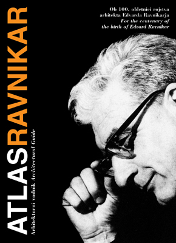
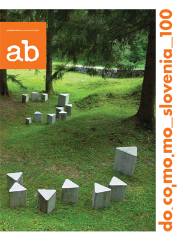
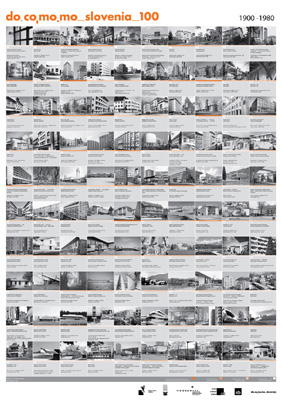

MONOGRAFIJA ARHITEKT DANILO FUERST avtorice dr. Nataše Koselj predstavlja enega najpomembnejših slovenskih modernističnih arhitektov 20. stoletja, ki je bil Plečnikov učenec in je odigral pionirsko vlogo na področju montažne gradnje stanovanj in sodobnega šolskega koncepta. Dr. Nataša Koselj je za monografijo l. 2014 prejela Plečnikovo medaljo. Izšla je v slovenskem in angleškem jeziku pri Celjski Mohorjevi družbi.
MONOGRAFIJA ARHITEKT DANILO FUERST avtorice dr. Nataše Koselj predstavlja enega najpomembnejših slovenskih modernističnih arhitektov 20. stoletja, ki je bil Plečnikov učenec in je odigral pionirsko vlogo na področju montažne gradnje stanovanj in sodobnega šolskega koncepta. Dr. Nataša Koselj je za monografijo l. 2014 prejela Plečnikovo medaljo. Izšla je v slovenskem in angleškem jeziku pri Celjski Mohorjevi družbi.
THE MONOGRAPH ARCHITECT DANILO FUERST by Dr. Nataša Koselj represents one of the most important Slovenian modernist architect from the 20th century. He was Plečnik’s pupil and was a pioneer of housing prefabrication and of the new school concept. Dr. Nataša Koselj was awarded Plečnik’s medal 2014 for the book. It was published by Celjska Mohorjeva družba in Slovenian and English language.
cena/price: 50 €
naročanje/ordering: knjigarna-lj@celjska-mohorjeva.si
Arhitekt Danilo Furst - Vodnik po arhitekturi - Bled z okolico - Prenos datetke PDF

Atlas Ravnikar je prvi vodnik po arhitekturi Edvarda Ravnikarja. Izšel je ob 100. obletnici Ravnikarjevega rojstva l. 2007, v založbi Docomomo Slovenija, v slovenskem in angleškem jeziku. Vsebuje seznam vseh Ravnikarjevih izvedenih in neizvedenih del, kratko biografijo in značilnosti njegovega ustvarjanja ter številne Ravnikarjeve misli o arhitekturnem ustvarjanju. Vsebuje tudi zemljevide z lokacijami izvedenih in neizvedenih projektov.Atlas Ravnikar is the first guide to the architecture of Edvard Ravnikar. It was published on the centenary of the Ravnikar’s birth in 2007 by Docomomo Slovenija, in Slovenian and English language. It contains a list of all Ravnikar’s works, a short biography, a description of main characteristics of his work and his quotes related to his own architectural creation. The guide also includes maps with the locations of the built and unbuilt projects.
cena/price: razprodano/sold out
prenos/download: Del A/Part A, Del B/Part B,

Docomomo Slovenia_100 je znanstvena monografija, ki je izšla v koprodukciji Docomomo Slovenija in revije ab leta 2010 v slovenskem in angleškem jeziku. Uvodnim člankom priznanih slovenskih strokovnjakov s področja arhitekturne zgodovine sledi katalog 100. del slovenske moderne arhitekture 20. stoletja (1900-1980), na koncu so seznami razporeditev glede na avtorja, tipologijo in regijo. Izbor del temelji na Docomomovih kriterijih vrednotenja in selekcije, ki se začenja po secesiji in končuje s 30 letno distanco.
Docomomo Slovenia_100 is a monograph, published as a co-production of Docomomo Slovenija and ab magazine in 2010, in Slovenian and English language. There are introductory studies written by recognized Slovenian experts on the 20th century architecture in the first part of the book, then there is a catalogue of 100 selected modernist buildings (1900-1980) and in the end there is a list of the buildings, classified by the criteria of authorship, region and typology. The book has 180 pages, 350 photos and addresses of all the selected buildings.
cena/price: 45 €
naročanje/ordering: Knjigarna Buča

Plakat Docomomo Slovenia_100 v velikosti 48 x 68 cm vsebuje izbor 100. arhitekturnih del slovenske arhitekture, nastalih med 1900 in 1980, ki so predstavljene v monografiji Docomomo Slovenija_100. Poleg fotografije je ime objekta v slovenskem in angleškem jeziku, naslov, letnica nastanka in ime arhitekta, z letnicami rojstva in smrti. V oranžni barvi pod fotografijo je ponazorjen status spomeniško varstvene zaščite objekta v letu 2010.
Poster Docomomo Slovenia_100 in the size 48 x 68 cm consists of 100. works of Slovenian architecture, built between 1900-1980 also presented in the Docomomo Slovenia_100 monograph. Besides the photo, there is a name of the building in Slovenian and English language, address, building year and name of the architect with the year of his birth and dead. In orange colour under the photo is shown the protection status of the building in 2010.
cena/price: 5 Eur
naročanje/ordering: info@docomomo.si